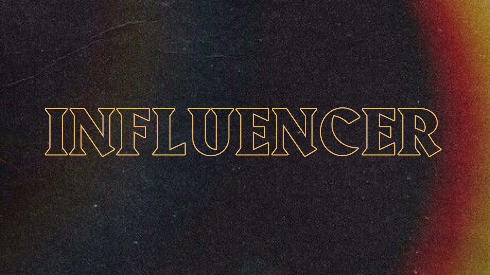

Influencer Week 1
Life / Intro Questions (Choose one or two)
- How did you guys like the “At the Movies” series? Pros and cons?
- What kind of influences do you have in your life? Good and bad.
Connection Question
- Has there ever been a time in your life where you or someone else was the unspoken leader? They weren’t declared the leader by anyone, they just stepped up to the plate and everyone followed.
Sermon in a Sentence
Scripture
- Romans 12:2 “Do not be conformed to this world, but be transformed by the renewal of your mind, that by testing you may discern what is the will of God, what is good and acceptable and perfect.”
- What is Jesus saying in this scripture?
Discussion Questions
- Think about the 5 closest people to you. How do they impact your life on a day to day? What examples are they setting for you to live by?
- What habits have you created for yourself? Good ones AND bad ones. How do you think these habits have helped you or hurt you?
- How often do you find yourself saying that your influence isn’t enough to impact someone? Explain.
Life Application
We want students walking away with 1 or 2 things they are going to do SOON to apply what they discussed.
- What steps can you take this week to grow as a kingdom influencer? Encourage them to step into the word of God because to be an influencer, you have to grow a relationship with God.
Take It Out
- Close small group out with prayer requests.
- After prayer, remind them of THE WEEKEND and any upcoming group events!